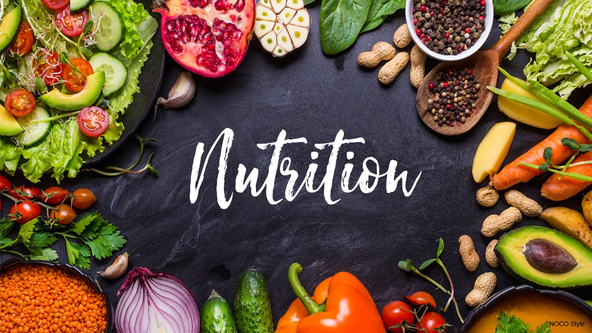

Nutrition plays a critical role in our overall health and well-being.it's crucial to check our nutrition regularly to ensure that we're getting the right amount of nutrients from our diet.
Checking our nutrition involves keeping track of the types of food we eat and making sure we're consuming a variety of healthy foods in the right proportions.
By doing so, we can take control of our health and improve our overall quality of life. Try searching for a big mac!

it's important to be aware of the nutritional content of the food you consume. For example, fast food meals can be notoriously high in calories, which can lead to weight gain and other health problems over time. By using this search function to find out the calorie content of your fast food meals, you can make more informed decisions about what you eat and how much you eat. This information can help you manage your calorie intake and make healthier choices when it comes to fast food. So next time you're considering ordering fast food, take a moment to use this search function to find out how many calories are in your meal. Your body will thank you for it! and while you are here take a gander at our pre-packaged meals. which are healthy and easy to eat.